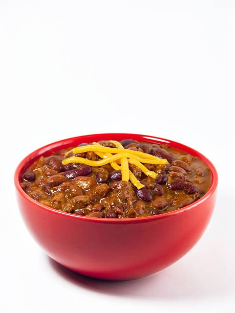

Spicy Chili

Ingrediants:
- Ground beef
- Ground sausage
- Chopped onion
- Bell peppers
- Jalapeño peppers
- Ketchup
- Lime juice
- Brown sugar
- Worcestershire
- Vinegar
- Spices
- Mustard
- V8 juice
- Beans
- Tomatoes
- Seasonings
- Salt and pepper
Instructions:
- Brown the meat: In a large saucepan, brown the ground beef and ground sausage, using a wooden spoon to break it into small pieces as it cooks. Drain most of the grease and remove meat to a plate.
- Sauté veggies: Add onion, bell peppers, and jalapeño peppers to the pot and sauté on medium high heat for 2-3 minutes.
- Add remaining ingredients: Spices, ketchup, lime juice, brown sugar, Worcestershire, vinegar, mustard, and V8. Stir well. Add beans, tomatoes, and salt and pepper.
- Simmer: Return the ground meat to the pot and bring the mixture to a low boil. Turn to a low simmer, cover, and cook for 1-2 hours.